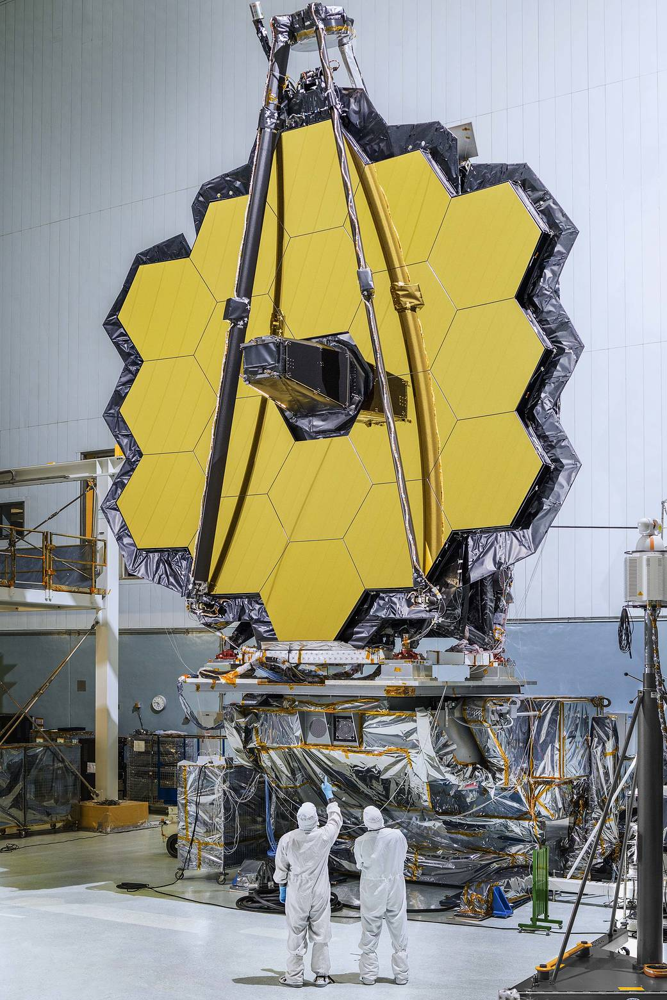

Seminar for the DU “MARI”
Seminar at Strasbourg Université.
Talks, seminars, observation nights, and science festivals have been part of my work in sharing astrophysics with different audiences.

3 OCT 2026 / DIEPPE
A public talk at the Fête de la Science in Dieppe about discoveries made by the James Webb Space Telescope.
Seminar at Strasbourg Université.
Public talk at the “Objectif Espace” festival.
Invited speaker at the round table for the “Projet Transition” festival.
Co-organizer of the public round table.
Speaker at the festival.
Annual participation in the science festival.
Organized numerous observation nights during my vice-presidency of the Montperrin faculty astronomy club.